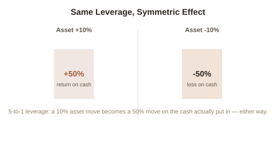

Chapter 7: Debt as Leverage — The Double-Edged Mechanism
Chapter 6 covered equity: gaining exposure to capital's higher compounding rate by owning a stake. This chapter covers the other classic route into capital exposure — debt — and why it's the most double-edged form of leverage covered anywhere in this topic.
What financial leverage actually does
Financial leverage means using borrowed money to control an asset larger than the cash actually put in. A house bought for $300,000 with a $60,000 down payment and a $240,000 mortgage means the buyer controls the full $300,000 asset with only 20% of it in cash — and if the house's value rises 10% to $330,000, that $30,000 gain is a 50% return on the original $60,000 actually invested, not a 10% return. The mortgage amplified the return relative to the cash actually put down. This is the appeal of debt as leverage: it doesn't just let someone afford a bigger asset, it multiplies the percentage return on whatever cash was actually committed.
The same mechanism amplifies losses, symmetrically
The amplification cuts identically in the other direction. If that same house drops 10% to $270,000, the $30,000 loss is 50% of the original $60,000 down payment — the exact same multiplier, working against the buyer instead of for them. Financial leverage doesn't change the underlying asset's percentage movement; it changes how much of that movement lands on the leveraged party's actual invested cash, in both directions, always symmetrically. This is the honest core of "leverage cuts both ways" — not a warning label bolted onto an otherwise one-directional tool, but a description of exactly how the mechanism works, unavoidably.

2008 as the case study in what happens when this is misunderstood at scale
The 2007-2008 financial crisis is, at its structural core, a story about leverage compounding across an entire system rather than one household. Mortgage lending extended heavily to borrowers with a high risk of default, those mortgages were bundled into securities, and many of the financial institutions holding those securities were themselves highly leveraged — borrowing heavily to hold assets whose actual underlying value turned out to be far less certain than assumed. When home prices fell, the same amplification math from the house example above applied simultaneously across millions of leveraged positions and thousands of leveraged institutions: modest declines in the underlying asset value became outsized losses for the leveraged holders, and because so many institutions were leveraged and interconnected, losses at one spread rapidly to others through the same lending and counterparty relationships that had made the leverage possible in the first place. The lesson isn't "leverage is bad" — it's that leverage scales risk exactly as reliably as it scales return, and a system where that scaling is poorly understood or poorly priced can fail in a way a single leveraged household's mortgage cannot.
Try this
Ideas for noticing or testing this in your own life.
- If you have any leveraged position — a mortgage, a margin account, a business loan — calculate the actual leverage ratio (asset value ÷ your cash in it) and multiply both a plausible gain and a plausible loss scenario by that ratio, rather than by the asset's raw percentage move alone.
Worth pulling on?
A few loose threads from this chapter — if any of these genuinely grab you, that's a good sign of where to go next.
- Media leverage — building an audience — doesn't carry this same amplified-loss risk, since there's no borrowed capital involved, but it has its own distinct compounding logic. → Picked up directly in Chapter 8.